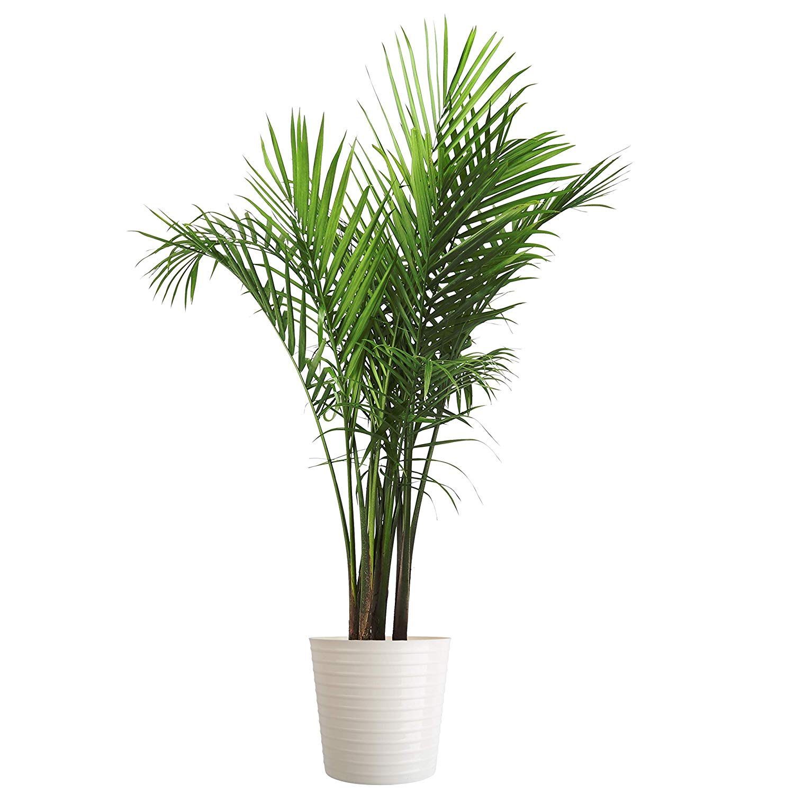

Plant Guide
Get to know your plant in depth

Majesty Palm
Recommended Environment
Sunlight: 7 hours
Water Content: 50%
Temperature: 76°
Humidity: Moist
Getting the Light Right
Majesty palms like a lot of light, so much so that they will be happiest near a sunny window. To thrive indoors, your majesty palm loves six to eight hours of bright light per day.
Water Well
One key to growing majesty palm indoors is to never let the soil dry completely; this palm (endangered in the wild!) comes from spots along streams and rivers. Be sure you have a pot with drainage holes so excess water can escape, otherwise the palm’s roots can drown and rot. Not sure if your palm is getting too much or too little water? Here’s an easy way to tell. If the fronds begin drying out at the tips and it moves down the leaf, causing the leaves to brown, the palm is too dry. If the leaves turn yellow, the soil may be too wet.
Give it A Breath of Fresh Air
Because majesty palm is a tropical plant, it likes moisture in the air. If the air is too dry for yours, you might find that just the leaf tips turn brown and dry. Boost humidity indoors for your majesty palm by keeping it in a room with a humidifier. It’s also helpful to protect your palm from cold, dry air. Majesty palms damaged by cold may recover fairly quickly if injured, but must be tended to right away. Warm wet air is best.
Don't have a humidifier handy? You can also see success with a humidity tray. Choose a wide, shallow container and fill it with gravel or sand and water. Set your majesty palm pot on top of the gravel or sand (so the bottom of the pot stays above the water line). As the moisture in the tray evaporates, it goes into the air right around your majesty palm fronds. Just refresh the tray with water periodically.
Don't have a humidifier handy? You can also see success with a humidity tray. Choose a wide, shallow container and fill it with gravel or sand and water. Set your majesty palm pot on top of the gravel or sand (so the bottom of the pot stays above the water line). As the moisture in the tray evaporates, it goes into the air right around your majesty palm fronds. Just refresh the tray with water periodically.
The Need to Feed Majesty Palms
When growing majesty palm indoors, use a general houseplant fertilizer every two to three months in spring and summer. Give the plant a chance to rest in the cooler, dimmer months of winter; you don’t need to fertilize at all.
Repotting Right: When It’s Time for New Digs
Your majesty palm needs space to thrive. To avoid overcrowding of your palm, be sure to repot regularly (every other year or so). Repotting shouldn’t be a big affair; increase the pot size by 2 inches each time. How do you know when it’s time to repot? Do it once you start seeing the root appear out of the top of the soil.
Prune Majesty Palm Like a Pro
Pruning your majesty palm indoors is a cinch! Just cut off any fronds as they turn yellow or brown. Doing so improves the look of your plants and creates a clean space for more fronds to grow.
Watch for Pests
Protect your majesty palm from pests, such as spider mites, by regularly fertilizing and keeping an eye out for signs of an attack. Good humidity can help keep spider mites at bay, as can misting with water regularly. Wipe the undersides of the leaves with a moist rag also helps keep spider mites from being a problem.
Proper Palm Placement
Wondering where the best place to grow majesty palms indoors is? One of the choicest spots to keep this tropical beauty is a corner of your bathroom if it has a large window. Your palm will love the bright light and abundant moisture.If your bathroom isn’t big enough for a majesty palm, go with a bright corner in your office, living room, dining room, or bedroom. Use majesty palm to purify the air and remove toxins such as benzene, formaldehyde, and carbon monoxide. Its style and grace ensures you will enliven your living space and provide the freshest feel of a perfect tropical escape by growing majesty palm indoors.